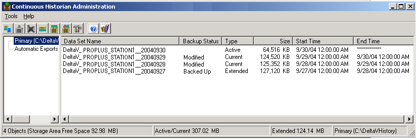

The Continuous Historian Administration application
The Continuous Historian Administration application provides a number of tools to help you manage DeltaV Continuous Historian data captured and available online. When the volume of online data grows too large, decisions need to be made about how to handle it. You can define rules to automatically discard selected data or move selected historical data from online historical data storage to offline data files. You can also interactively choose the historical data to discard or move to offline storage. Additional tools are available to let you temporarily bring online the historical data from offline storage files.
You must run the Continuous Historian Administration application on the same workstation where the DeltaV Continuous Historian is installed. To start the Continuous Historian Administration application, click .

The Primary storage area in the left pane lists active, current, and extended historical data sets in the right pane. The size and time span properties of the Primary storage area, data set size and time span properties, and the automatic actions for data set export are defined on the Continuous Historian Properties dialog in the DeltaV Explorer. The Automatic Exports area in the left pane lists the data sets that have been automatically exported in the right pane. One or more of these data sets can be returned to the Primary storage area as extended data sets using .
For detailed information about all the tools available in the Continuous Historian Administration application, refer to its online help.